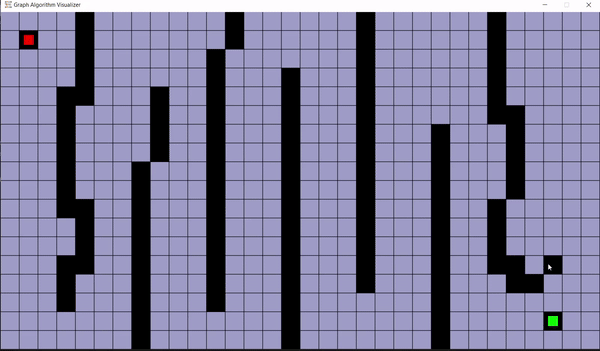

VisuAlgo

Watch it in Action
Real-time visualization of BFS algorithm finding the shortest path
Overview
VisuAlgo is an interactive visualization tool designed to help users understand and learn about pathfinding algorithms. It provides a visual representation of how algorithms like Breadth-First Search (BFS) and Depth-First Search (DFS) work in real-time, making it easier to grasp complex algorithmic concepts.
Technologies Used
- Python
- Pygame (Graphics and Visualization)
- Tkinter (User Interface)
- SQLite (Data Storage)
Key Features
VisuAlgo offers several powerful features that make learning algorithms more engaging and intuitive:
- Interactive Grid: Users can create custom mazes by placing walls and selecting start/end points
- Multiple Algorithms: Support for both BFS and DFS algorithms with real-time visualization
- Custom Maze Creation: Build your own maze layouts or generate random mazes
- Step-by-Step Visualization: Watch algorithms explore the maze with clear visual feedback
- User Controls: Pause, resume, and restart the visualization at any time
Implementation Details
The project uses Pygame for the main visualization engine, creating an interactive grid where users can draw walls and observe algorithm behavior. The implementation includes:
- A grid-based system where each cell can be a wall, path, start point, or end point
- Efficient algorithm implementations with clear visual feedback for visited nodes and paths
- Intuitive user interface for maze creation and algorithm selection
- Real-time visualization of algorithm progress with color-coded states
Challenges and Solutions
One of the main challenges was creating a smooth and responsive visualization while maintaining algorithm accuracy. This was solved by:
- Implementing efficient data structures for grid representation
- Using Pygame's event system for responsive user interaction
- Optimizing the visualization loop to maintain performance
Results and Impact
VisuAlgo has proven to be an effective educational tool for understanding pathfinding algorithms. The visual nature of the tool makes it easier for users to:
- Understand how BFS and DFS algorithms work in practice
- See the differences between algorithms in real-time
- Experiment with different maze configurations
- Learn algorithm concepts through interactive visualization